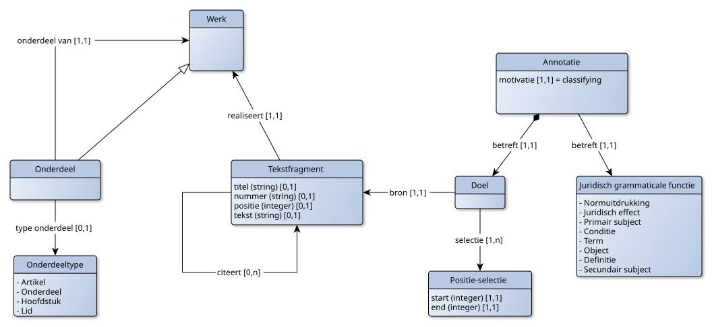
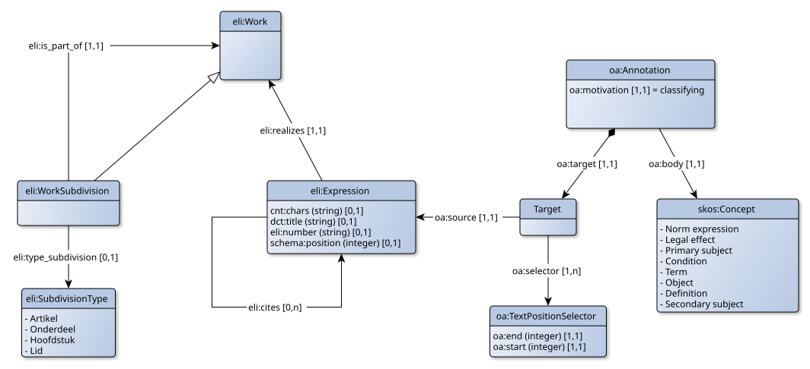

Deze pagina beschrijft het toepassingsprofiel voor het tekstuele, bovenste echelon. Het gaat daarbij om de tekst, inclusief de juridisch grammaticale analyse van die tekst, dwz: het toekennen van juridisch grammaticale functies aan onderdelen van de tekst.
Een juridische tekst is opgebouwd uit bepalingen. Dit zijn zinnen die iets bepalen. De belangrijkste bepalingen zijn bevoegdheids- en gedragsbepalingen, samen de normbepalingen genoemd. Deze bepalingen normeren het gedrag van degene tot wie de norm is gericht. Daarnaast kunnen ook nog andere bepalingen worden onderkend. Zoals de begripsbepaling. Met een dergelijke bepaling wordt de betekenis van een begrip bepaald en meestal ook de term waarmee in de juridische tekst naar dit begrip wordt verwezen.
Juridisch-grammaticale ontleding van een normatieve bepaling betreft het toekennen van juridisch-grammaticale functies aan tekstdelen van een zin. Aan een tekstdeel kan maximaal één juridisch grammaticale functie worden toegekend. Bij normatieve bepalingen worden de volgende juridisch-grammaticale functies onderkend:
Naast normatieve bepalingen kennen we ook definiërende bepalingen. Daarbij kunnen de volgende juridisch-grammaticale functies worden onderkend:
Elk tekstdeel kan maximaal één juridisch-grammaticale functie hebben. In een bepaling kunnen wel meerdere keren dezelfde juridisch-grammaticale functie voorkomen.


| URI | http://data.europa.eu/eli/ontology#WorkSubdivision |
|---|---|
| Definitie | A component of a work, at an arbitrary level of precision. A subdivision can be linked with its parent and children subdivision using eli:has_part / eli:is_part_of. |
| Specialisatie van | eli:Work |
| Eigenschap | Kardinaliteit | Datatype/klasse |
|---|---|---|
| eli:type_subdivision | 0..1 | eli:SubdivisionType |
| eli:is_part_of | 1..1 | eli:Work |
| URI | http://data.europa.eu/eli/ontology#Work |
|---|---|
| Definitie | Any distinct intellectual creation (i.e., the intellectual content), in the context of ELI. |
The substance of Work is ideas.| Specialisatie vanhttp://iflastandards.info/ns/fr/frbr/frbroo/F1_Work|
| Eigenschap | Kardinaliteit | Datatype/klasse |
|---|
| Eigenschap | Kardinaliteit | Datatype/klasse |
|---|---|---|
| oa:motivation | 1..1 | |
| oa:body | 1..1 | skos:Concept |
| oa:target | 1..1 | Target |
| URI | http://www.w3.org/ns/oa#TextPositionSelector |
|---|---|
| Specialisatie van | Selector |
| Eigenschap | Kardinaliteit | Datatype/klasse |
|---|---|---|
| oa:source | 1..1 | eli:Expression |
| oa:selector | 1..n | oa:TextPositionSelector |
| Waarde | Omschrijving |
|---|---|
| Artikel | |
| Onderdeel | |
| Hoofdstuk | |
| Lid |
| Waarde | Omschrijving |
|---|---|
| Normuitdrukking | |
| Juridisch effect | |
| Primair subject | |
| Conditie | |
| Term | |
| Object | |
| Definitie | |
| Secundair subject |
| Normbepaling | Begripsbepaling |
|---|---|
| Primair subject | Term |
| Secundair subject | Definitie |
| Normuitdrukking | |
| Object | |
| Conditie | |
| Juridisch effect |
pensioengerechtigde leeftijd: pensioengerechtigde leeftijd, bedoeld in artikel 7a, eerste lid, van de Algemene Ouderdomswet
bijstand: algemene en bijzondere bijstand
bijzondere bijstand: de bijstand, bedoeld in artikel 35 en de individuele inkomenstoeslag, bedoeld in artikel 36
Op aanvraag van een persoon van 21 jaar of ouder doch jonger dan de pensioengerechtigde leeftijd, die langdurig een laag inkomen en geen in aanmerking te nemen vermogen als bedoeld in artikel 34 heeft en geen uitzicht heeft op inkomensverbetering, kan het college, gelet op de omstandigheden van die persoon, een individuele inkomenstoeslag verlenen